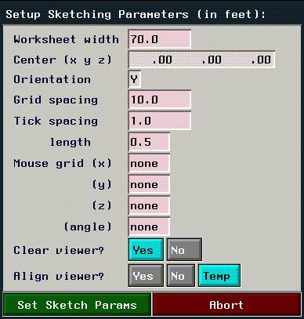
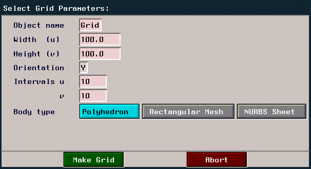

Solid of Rotation
File>New Object>solid of rotation builds a solid of rotation (sometimes referred to as a "lathe" operation).
Tube
File>New Object>tube builds a tube shaped object.

Figure 2.37 A wire (top) and a tube made with a circular cross-section
Figure 2.38 A second wire encoded for use as the contour
Tube Solid
File>New Object>tube solid creates a tube solid, which resembles a tube in that a silhouette or contour is swept along a path, but instead of the contour being closed (creating a cross section), the whole swept area is enclosed by connecting the beginning and end of the path and creating top and bottom faces, like a contour solid.
To build a tube solid, start by encoding the contour wire:
Lamina
File>New Object>lamina sketches a contour, which is then made into a flat, double-sided polyhedron.
Contour Solid
File>New Object>contour solid creates a contour solid polyhedron. A contour solid is created by scaling the cross section out to the contour. First create the path wire:
(CLICK-L) on Make Solid to generate the final contour solid:
Wires & Trajectories
Wires and trajectories can be created by manually specifying, or encoding, the coordinates of each node on the object. (CLICK-L) on the wire or trajectory options of the New Object menu, depending on which type of element you want to create:
When encoding wires or trajectories, mouse clicks work as follows:
Encoding Options
To display the following menu of encoding options, (SHIFT-R) while encoding. (This menu comes up only after you have entered the sketch editor, described below.)
Cursor
Modifies the shape and characteristics of the cursor used when encoding:
Quit
Ends the encoding session and returns to the top level of N-Geometry.
Temporary Halt
Halts encoding for one command. (This is useful if for when you want to move the camera.)
Zero
Resets the cursor position, depending on which mouse button you click:
1. Create a polyhedron (such as an octahedron).
2. (CLICK-L) on File>New Object>patch body.
Grid
(CLICK-L) on File>New Object>grid brings up a Select Grid Parameters menu:

Parameters for generating a grid are shown below:
Text
N-Geometry comes with a wide variety of pre-installed fonts from which you can generate 3D text characters.
Default generated characters are laminae and can be manipulated just like any other object. However, the number of operations you can use with faces with holes is limited. (Refer to the section "Faces with Holes," on page A-1.)
Image
The File>New Object>image command lets you create a wire or lamina by converting the outline of an image (or a matte channel) in N-Paint into an object in N-Geometry.
1. In N-Paint, make the image from which you want to generate the object(s) your current image.
2. In N-Geometry, (CLICK-L) on File>New Object>Image.
3. After selecting the parameters used to generate the laminae, (CLICK-L) on the Make Body button.
Figure 2.63 Objects resulting from imageThe parameters in the Image dialog box are described in the table below:
Skeleton
(CLICK-L) on File>New Object>skeleton to create a skeleton primitive for use with the Skeletal Animation System (SAS). Skeletons let you animate attached objects (or "skins") using a wide variety of operations, or by using motion capture data, or both.
Copyright © 1996, Nichimen Graphics Corporation. All rights reserved.